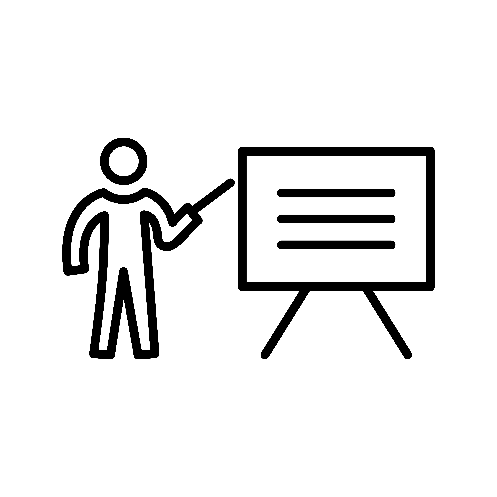

Assignment 1: The Swedish academic framework
Purpose:
Familiarise participants with the Swedish legal and institutional context in which Open Science operates.
Learning outcomes:
Upon completion of this assignment, participants will be able to:
- Describe the roles of national authorities, universities, and oversight bodies, and understand how these influence the structure and conduct of PhD studies
- articulate how academic freedom, the principle of public access (allmän handling), and the teacher’s exemption (lärarundantaget) affect transparency, data sharing, and ownership of research outputs.
Estimated duration:
60min
To-do:
Read the module below, answer the reflection questions in the Google form and submit.
The Swedish academic system
Welcome to Open Science in the Swedish context! Before diving into Open Science, it’s essential to first understand how research in Sweden actually works. Who sets the overall direction of research in Sweden and decides which areas are prioritized? Which aspects of your research and education are decided at a national level, and which are determined by your university? How is the push for Open Science coordinated, and how does it influence what you are expected to share, document, or publish?
Understanding the answers to these questions is key to knowing what you as a researcher in Sweden can, must, and cannot do, often in ways that aren’t immediately visible in your day-to-day work. Grasping the basics of the Swedish research system provides important context for later discussions about sharing data, publications, and other Open Science practices.
 Who sets the rules?
Who sets the rules?
First, it’s useful to understand how PhD education and research are governed at the national level. In Sweden, the Government and the Riksdag (the Swedish parliament) are responsible for higher education and research. Even if you rarely interact with them directly, their decisions shape many aspects of your PhD life, from what degrees universities can award, to how research is funded, to which rules apply to your research practice.
The government and parliament shape PhD education and research direction in three main ways (click to expand and find out more):
They set the legal framework for universities
The basic rules for higher education and research in Sweden are laid down in national legislation, primarily through two laws (1):
- The Higher Education Act, which defines the overall mission of higher education, academic freedom, and the responsibilities of universities
- The Higher Education Ordinance, which contains more detailed provisions on degrees, admissions, employment, and study programmes
The Government also sets the medium-term strategic direction for Swedish research through a national research policy bill published every four years. The current bill (2025–2028) highlights priorities such as research excellence, internationalisation, innovation, and openness and influences how public research funding is distributed.
They allocate public funding to universities
Public funding is the main way the government supports research and PhD education in Sweden. How much money is available, who it goes to, and the conditions attached to it help shape what research is possible, what projects get prioritized, and the expectations around Open Science. Research and PhD education in Sweden is funded separately from undergraduate and master’s education, and funding comes from several sources (2):
Recurrent government funding
Non-competitive base grants allocated directly to universities, which provide long-term stability for research and PhD education.External competitive funding
Awarded by public agencies as well as private research funders and organisations.
Almost half of this funding comes from the Swedish government through national research funders, including:- the Swedish Research Council (Vetenskapsrådet)
- the Swedish Research Council for Health, Working Life and Welfare (Forte)
- the Swedish Research Council for Sustainable Development (Formas)
- Sweden’s Innovation Agency (Vinnova)
- the Swedish Energy Agency (Energimyndigheten)
Around 35% of external competitive funding comes from research foundations and private non-profit organisations, such as the Knut and Alice Wallenberg Foundation and The Swedish Foundation for Strategic Research.
The remaining 20% of external competitive funding comes from private companies, EU funding schemes (e.g. The EU Framework Programme for Research and Innovation, currently Horizon Europe), and other funding streams.
They supervise higher education and research providers to ensure compliance with national legislation
To make sure universities follow the rules, several independent government agencies under the Ministry of Education and Research oversee higher education and research activities in Sweden.
- The Swedish Higher Education Authority (Universitetskanslersämbetet, UKÄ) supervises universities’ compliance with the Higher Education Act and Ordinance. It is responsible for:
- quality assurance of higher education
- appraisal of degree-awarding powers
- legal supervision of universities
- statistics, monitoring, and long-term analysis of the higher education sector
- The Swedish Council for Higher Education (Universitets- och högskolerådet, UHR) focuses on admissions, recognition of qualifications, international mobility, and information about higher education.
Taken together, national laws, funding rules, and oversight bodies set the broad framework for how Swedish academia works. At this level, priorities for Open Science are established and shape the funding and support available for putting it into practice. For you as a PhD student, this means that expectations around openness (e.g. open access publishing, data management, transparency, and research integrity) aren’t just local preferences at your university, but increasingly backed by national policies and laws.
 What do universities decide?
What do universities decide?
Although Sweden’s higher education system is nationally regulated, universities are given a lot of freedom in how research and education is carried out. The Government sets overarching goals, which means that all Swedish universities share a common mission that includes:
- Education based on research or artistic practice
- Research and development work
- Interaction with society, so that research and knowledge benefit the wider community
How universities specifically fulfil this mission is however largely up to them. Within the national legal framework, universities can independently decide:
- How they are organised
- Which courses and programmes to offer
- How education is designed and delivered
- How many students to admit
- What research to prioritise
There is thus no nationally fixed curriculum and no central planning of how much research or education should be done in specific fields. This institutional autonomy is a defining characteristic of the Swedish system.
Because the national framework deliberately leaves room for interpretation, universities have a lot of responsibility for turning expectations about openness into practice. This is where Open Science becomes concrete: through local policies, support services, infrastructure, training, and everyday routines. For you as a PhD student, knowing what comes from national requirements and what is decided by your university helps you see what you have to do, what you can adapt, and where to ask for help as Open Science becomes part of your research work.
Openness built into the Swedish academic system
Between national policy and university-level decision-making, there are some core principles in Swedish academia that apply to all Swedish universities. These rules are the same everywhere and are not optional, they are built into law and long-standing academic practice. Even though they are not labelled as “Open Science”, they set clear expectations around transparency, access, and responsibility in research. For you, this means there is a shared baseline for how research in Sweden should be carried out, documented, and shared, regardless of where you are enrolled.
Academic freedom
The first foundational principle is academic freedom, which is protected in the Higher Education Act. In Sweden, universities are legally required to safeguard academic freedom as a core condition for research and education. In practice, this means that all researchers — including you as a PhD student — have the right to:
- choose and refine their research questions
- develop and apply appropriate methods
- communicate, publish, and discuss their results
Universities have to not only respect your academic freedom, but also actively protect and promote it by providing appropriate working conditions, supervision, and safeguards. At the same time, academic freedom is not unlimited. It comes with clear responsibilities. The Higher Education Act emphasises academic integrity and good research practice, meaning that you are expected to conduct your research ethically, transparently, and responsibly. To better understand the ethical principles, regulations, and responsibilities that apply to your research, see Good Research Practice 2024, a report published by the Swedish Research Council.
The principle of public access (‘Allmän handling’)
The second foundational principle is transparency in research. In Sweden, this is not only a scientific ideal but a legal requirement. Under the Freedom of the Press Ordinance (Tryckfrihetsförordningen, 1949:105), the public (“allmänheten”) has a constitutional right to access allmänna handlingar (official public documents) held by public authorities. Because public universities are classified as public authorities, many documents created or held within universities fall under this principle.
In practice, this means:
- A wide range of material connected to your PhD work may be considered public, e.g. meeting minutes, project documentation (i.e. lab journal), email correspondence, research protocols, and in some cases databases or research records can be requested by anyone.
- A person requesting access does not need to explain why, and they may remain anonymous.
- If a university refuses to release a document, the decision must be legally justified and can be challenged in the Court of Appeal (‘Hovrätt’).
Transparency also applies over time. Under the Archives Act (Arkivlagen, 1990:782), public authorities — including universities — are required to preserve and manage your research documentation for legal, scientific, and historical purposes. This means that research records connected to your PhD may not only be accessible during your studies, but may also be stored and retrievable long after your project has ended.
As seen above, public access is not unlimited and universities can refuse to release a document. The Public Access and Secrecy Act (Offentlighets- och sekretesslagen, 2009:400) defines what information must be kept confidential, for example to ensure:
- Confidentiality: Protecting personal data and sensitive research topics
- Legal compliance: Following ethical guidelines and applicable laws
- Risk mitigation: Balancing transparency with security
Ethical approvals, data protection legislation (GDPR), and secrecy rules can therefore restrict what may be disclosed, even if a document does exist.
From an Open Science perspective, the principle of public access sets transparency as the default in publicly funded research in Sweden. Openness is assumed unless there are clear legal or ethical reasons not to share. This is why careful documentation, traceability, and responsible data management are central to Swedish research governance and Open Science, and why these practices matter directly in your everyday PhD work.

The teacher’s exemption (‘Lärarundantaget’)The third foundational legal principle that is applied in Swedish academia is the lärarundantaget (teacher’s exemption). Unlike in many other countries, this means that teachers and researchers (including PhD students) generally retain the rights to materials they create in the course of their academic work, rather than these rights automatically transferring to the university as the employer. This give you a comparatively strong position when it comes to ownership of your academic work!
For PhD students, lärarundantaget primarily affects intellectual property, such as novel methods, software, algorithms, materials, or therapeutics. If your PhD project develops any of these, you typically have significant influence over how your work is used, shared, or further developed, including whether, when, and how it is made openly available. Some data and materials in projects involving intellectual property might be legitimately exempt from open access requirements, including:
- Data protected under intellectual property laws, such as Patent Law (1967:837), where early openness could conflict with innovation, commercialisation, or patentability.
- Data that is owned by third parties and protected by Copyright Law (1960:729) that limits redistribution or reuse.
From an Open Science perspective, lärarundantaget can be seen as a double-edged sword. On one hand, retaining rights to your own work gives you the freedom to share materials, add licences that support openness and reuse, and contribute to a transparent research culture. On the other hand, not all outputs can or should be shared immediately. If your work involves innovation, methods, or data that could be patented or are subject to commercial or third-party rights, immediate openness may conflict with patentability, licensing agreements, or intellectual property protections.
This means that as a PhD student, you carry the responsibility to make informed decisions about what, when, and how to share your work. Understanding these boundaries early helps you balance openness with ethical, legal, and strategic considerations, ensuring that your research is both responsible and maximally reusable whenever possible.
Reflection questions
In this assignment, we’ve explored how the Swedish academic system works and discussed some key principles that embed openness in Swedish research.
Now it’s time to reflect on what this means for your own project. Consider how these rules and principles shape the way you document, share, and manage your research, and how they interact with your responsibilities as a PhD student. Fill out the questions in the form below to think critically about your practices, anticipate potential challenges, and prepare for discussions during the course.
References and further reading
- Swedish Higher Education Authority. (2023) Governance of higher education Swedish Higher Education Authority https://www.uka.se/swedish-higher-education-authority/about-higher-education/governance-of-higher-education. Accessed 11-02-2025
- Ahlstedt, S., Doctrinal, L., Gribbe, J., Hansson, A. & Stengård, E. (2025) Sweden’s academic landscape: Higher education and research explained Swedish Higher Education Authority Report 2025:18.
Bird cage icon: Freedom icon by Icons8.
Teacher icon: Teach Icon Vectors by Vecteezy.
Document icon: Icon by Iconpacks.
1949:105 The Freedom of the Press Ordinance, ‘Tryckfrihetsförordning’, Justitiedepartementet, 1949.
1960:729 on Copyright in Literary and Artistic Works, ‘Om upphovsrätt till litterära och konstnärliga verk’, Justitiedepartementet, 1960.
1967:837 Patent law, ‘Patentlag’, Justitiedepartementet, 1967.
1990:782 Archives Act, ‘Arkivlag’, Kulturdepartementet, 1990.
1992:1434 The Higher Education Act, ‘Högskolelag’, Utbildningsdepartement, 1992.
1993:100 Higher Education Ordinance, ‘Högskoleförordning’, Utbildningsdepartement, 1993.
2009:400 Public Access and Secrecy Act, ‘Offentlighets- och sekretesslag’, Justitiedepartementet, 2009.
2019:504 the Act on Responsibility for Good Research Practice and the Examination of Research Misconduct, ‘Om ansvar för god forskningssed och prövning av oredlighet i forskning’, Utbildningsdepartement, 2019.
2022:818 On the Public Sector’s Access to Data, ‘Om den offentliga sektorns tillgängliggörande av data’, Finansdepartementet, 2022.
EU 2016/679 Data Protection Regulation (GDPR), European Union, 2016.
Good Research Practice. ‘God forskningssed’, VR, 2024.
Guidance for higher education institutions’ work to prevent, manage and follow up on suspected deviations from good research practice. ‘Vägledning för lärosätens arbete med att förebygga, hantera och följa upp misstankar om avvikelser från god forskningssed’, SUHF, 2023